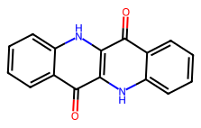

Epindolidione proton transfer
Giovanni Gravili ![]()
Abstract
We repeat indigo’s PM6 proton transfer for epindolidione, from a relaxed scan of the N–H proton through the refined transition state and the IRC to both tautomers, and compare their B3LYP electrostatic potentials.
Keywords
epindolidione, proton transfer, PM6, transition state, IRC, electrostatic potential
TipAccepted
The saddle, IRC and both endpoint minima are verified within PM6.
The saddle has one imaginary proton-transfer mode, and the two IRC branches lead to endpoint structures that were separately optimized and frequency-checked. These checks establish the PM6 connection between the N–H and O–H forms. The accompanying B3LYP fields remain single-point descriptions of PM6 geometries, without zero-point or thermal corrections.
Molecule and proton-transfer coordinate
Epindolidione with PM6, transferring \ce{H21} from \ce{N3} to the carbonyl oxygen \ce{O1} (Figure 1). The transfer is followed along the difference of the two proton distances, which grows as the proton moves toward oxygen:
q=r_{\mathrm{NH}}-r_{\mathrm{OH}}.

The tables and discussion use the PM6 electronic energy difference E-E_0, where E_0 is the separately optimized N–H minimum. The energy plots instead use the last recorded reverse IRC point as zero; it is not assumed to be an optimized minimum. The viewer follows the reaction path from the N–H side to the O–H side (Figure 2).
Energy along the transfer
The relaxed scan fixes q at eleven targets 0.2\,\text{\AA} apart; its maximum seeds the transition-state search, and the IRC then follows the unconstrained path down from the saddle along \pm s (Figure 3).
The saddle lies 120.3\,\mathrm{kJ}\,\mathrm{mol}^{-1} above the N–H minimum and the O–H tautomer 87.6\,\mathrm{kJ}\,\mathrm{mol}^{-1} above it, so the O–H tautomer returns over a barrier of only 32.7\,\mathrm{kJ}\,\mathrm{mol}^{-1} (Table 1).
| Structure | q\;[\text{\AA}] | r_{\mathrm{NH}}\;[\text{\AA}] | r_{\mathrm{OH}}\;[\text{\AA}] | E-E_0\;[\mathrm{kJ}\,\mathrm{mol}^{-1}] | E-E(s_\mathrm{R})\;[\mathrm{kJ}\,\mathrm{mol}^{-1}] |
|---|---|---|---|---|---|
| N–H minimum | -1.3648 | 1.025 | 2.3898 | 0 | -2.1106 |
| Scan maximum | 0.2352 | 1.511 | 1.2757 | 118.21 | 116.1 |
| Transition state | 0.24438 | 1.5165 | 1.2721 | 120.31 | 118.2 |
| O–H minimum | 1.2576 | 2.2828 | 1.0252 | 87.617 | 85.506 |
Scan targets, path coordinate and gradients
The relaxed scan and the IRC behind the energy profile, with their geometries and residual gradients.
Relaxed scan
Each target holds q fixed while every other coordinate relaxes, so the scan maximum is a constrained point, not a saddle (Figure 4). The RMS Cartesian gradient keeps the component along the constrained direction and need not vanish (Figure 5):
g_{\mathrm{RMS}}=\sqrt{\frac{1}{3N}\sum_{j=1}^{3N}\left(\frac{\partial E}{\partial x_j}\right)^2}.
IRC
The IRC advances along the signed mass-weighted path length s, with the dashed line at s=0 marking the saddle and positive s toward oxygen:
ds^2=\sum_i m_i\,d\mathbf{R}_i\cdot d\mathbf{R}_i.
Its termini stop short of the minima: the N–H terminus lies 2.1\,\mathrm{kJ}\,\mathrm{mol}^{-1} above the optimized N–H minimum, so separate optimizations supply both minima (Figure 6, Figure 7).
Both minima have only real modes; the lowest are 36.2\,\mathrm{cm}^{-1} (N–H) and 43.1\,\mathrm{cm}^{-1} (O–H).
Transition state and its unstable mode
Released from the scan constraint, the PM6 saddle search converges to a first-order saddle: one imaginary mode, k=1 at 1193.64i\,\mathrm{cm}^{-1}, carries \ce{H21} between \ce{N3} and \ce{O1}, and the other 83 modes are real (Figure 8, Table 2).
| k | \widetilde{\nu}_k\;[\mathrm{cm}^{-1}] | \mu_k\;[\mathrm{Da}] | K_k\;[\mathrm{mdyn}\,\text{\AA}^{-1}] | I_k\;[\mathrm{km}\,\mathrm{mol}^{-1}] |
|---|---|---|---|---|
| 1 | -1193.6 | 1.1199 | 0.94007 | 1457.7 |
Harmonic modes and IR spectrum
The animation displaces each atom i along the normalized eigenvector \mathbf v_{ki} with maximum excursion A=0.10\,\text{\AA}; it shows the local direction of the mode, not a thermal amplitude:
\mathbf{R}_i(\phi)=\mathbf{R}_i^0+A\sin\phi\,\frac{\mathbf{v}_{ki}}{\max_j\lVert\mathbf{v}_{kj}\rVert}.
Signed, unscaled PM6 wavenumbers of all 84 modes (Figure 9); the softest and the most IR-intense real modes are listed in Table 3.
| k | \widetilde{\nu}_k\;[\mathrm{cm}^{-1}] | \mu_k\;[\mathrm{Da}] | K_k\;[\mathrm{mdyn}\,\text{\AA}^{-1}] | I_k\;[\mathrm{km}\,\mathrm{mol}^{-1}] |
|---|---|---|---|---|
| 2 | 44.018 | 6.1469 | 0.0070173 | 2.7442 |
| 3 | 78.03 | 4.7 | 0.016861 | 1.3218 |
| 4 | 103.93 | 5.3638 | 0.034134 | 2.3615 |
| 5 | 135.76 | 6.5031 | 0.070618 | 0.4402 |
| 6 | 144.3 | 4.9092 | 0.060224 | 0.22372 |
| 45 | 1024.9 | 8.4995 | 5.26 | 387.84 |
| 66 | 1508.4 | 8.3018 | 11.129 | 1214.2 |
| 67 | 1537.6 | 7.5928 | 10.576 | 399.75 |
| 71 | 1662.9 | 9.312 | 15.171 | 687.78 |
| 74 | 1751.2 | 12.321 | 22.263 | 509.63 |
Harmonic IR intensities of the real modes; the imaginary mode is not an absorption (Figure 10).
Electrostatic potential at the minima and the saddle
B3LYP/6\text{-}31{+}\mathrm{G}(d) single points at the two PM6 minima and the PM6 saddle give the electrostatic potential V on the density surface \rho=0.002\,\mathrm{e}\,a_0^{-3}, on one colour scale for all three (Table 4, Figure 11). The most negative surface potential deepens from -1.69\,\mathrm{V} at the N–H minimum to -2.03\,\mathrm{V} at the O–H minimum, and the saddle has the largest positive extreme, 2.73\,\mathrm{V}.
| Structure | V_{\min}\;[\mathrm{V}] | V_{\max}\;[\mathrm{V}] |
|---|---|---|
| N–H minimum | -1.6933 | 2.3647 |
| Transition state | -1.9473 | 2.679 |
| O–H minimum | -2.025 | 2.6427 |
Caveats
- PM6 is semi-empirical, and all energies are electronic: zero-point and thermal corrections are not included.
- The B3LYP fields describe the PM6 geometries; no B3LYP minimum, transition state or barrier was calculated.
- The three fields are single structures, not an ESP along every IRC frame.
Calculations
Every calculation of this workflow, grouped as in the diagram. A scan’s runs are on the scan’s page. Select a calculation to open its page.
---
config:
markdownAutoWrap: false
themeVariables:
fontSize: 13px
primaryColor: '#ffffff'
primaryBorderColor: '#adb5bd'
primaryTextColor: '#212529'
lineColor: '#6c757d'
clusterBkg: '#f8f9fa'
clusterBorder: '#dee2e6'
titleColor: '#212529'
edgeLabelBackground: '#ffffff'
themeCSS: '.nodeLabel, .nodeLabel p { white-space: nowrap !important; }
.nodeLabel a { display: inline-flex; align-items: baseline; white-space: nowrap; gap: 0.25em; }
.nodeLabel math { display: inline math !important; math-style: compact; }
.nodeLabel .katex-display { display: inline; margin: 0; }
'
theme: base
flowchart:
useMaxWidth: false
defaultRenderer: elk
rankSpacing: 24
nodeSpacing: 24
diagramPadding: 8
curve: rounded
layout: elk
---
flowchart TB
subgraph Sampling["<span>Minimum and proton-transfer $$q$$ sampling</span>"]
%% description: Relax the remaining coordinates while sampling the transfer coordinate $q$ to locate a candidate barrier region for saddle refinement.
direction TB
Optimize1["<a href='2026-10-15_203851/'>Optimize the PM6 $$S_0$$ geometry</a>"]
Scan1["<a href='2026-10-15_203852/'>Scan the relaxed PM6 proton-transfer coordinate</a>"]
end
subgraph Path["Saddle and reaction path"]
%% description: Refine the saddle, check its negative-curvature mode and follow the intrinsic reaction coordinate to establish which endpoint regions it connects.
direction TB
Refine1["<a href='2026-10-15_203853/'>Refine and verify the PM6 proton-transfer TS</a>"]
IRC1["<a href='2026-10-15_210005/'>Follow the PM6 proton-transfer IRC along $$\pm s$$</a>"]
end
subgraph Minima["Endpoint minima"]
%% description: Optimize each IRC endpoint separately and check its harmonic frequencies to distinguish stationary minima from points where path following stopped.
direction TB
Optimize2["<a href='2026-10-15_210006/'>Optimize and verify the PM6 N–H endpoint</a>"]
Optimize3["<a href='2026-10-15_210007/'>Optimize and verify the PM6 O–H endpoint</a>"]
end
subgraph Fields["<span>Electron density $$\rho$$ and ESP $$V$$</span>"]
%% description: Compare electron density $\rho$ and electrostatic potential $V$ at the selected geometries using a common surface and potential scale.
direction TB
Evaluate1["<a href='2026-10-16_094546/'>Evaluate B3LYP fields at the N–H minimum</a>"]
Evaluate2["<a href='2026-10-16_094547/'>Evaluate B3LYP fields at the proton-transfer TS</a>"]
Evaluate3["<a href='2026-10-16_094548/'>Evaluate B3LYP fields at the O–H minimum</a>"]
end
Optimize1 --> Scan1
Scan1 --> Refine1
Refine1 --> IRC1
IRC1 --> Optimize2
IRC1 --> Optimize3
Optimize2 --> Evaluate1
Refine1 --> Evaluate2
Optimize3 --> Evaluate3
Start1(( ))
Input1[/"Epindolidione N–H starting geometry"/]
Output1Energy[/"<span>Proton-transfer profiles $$\Delta E$$</span>"/]
Output1Modes[/"<span>Stationary-point modes $$\nu_i$$</span>"/]
Output1Fields[/"<span>Density $$\rho$$ and ESP $$V$$</span>"/]
End1((( )))
Start1 --> Input1
Input1 --> Optimize1
Scan1 --> Output1Energy
IRC1 --> Output1Energy
Output1Energy --> End1
Refine1 --> Output1Modes
Optimize2 --> Output1Modes
Optimize3 --> Output1Modes
Output1Modes --> End1
Evaluate1 --> Output1Fields
Evaluate2 --> Output1Fields
Evaluate3 --> Output1Fields
Output1Fields --> End1
classDef complete stroke:#198754,stroke-width:2px;
classDef warning stroke:#e0a800,stroke-width:2px;
classDef serious stroke:#fd7e14,stroke-width:2px;
classDef blocked stroke:#dc3545,stroke-width:2px;
classDef pending stroke:#adb5bd,stroke-width:2px;
classDef running stroke:#0d6efd,stroke-width:2px;
classDef verification stroke-dasharray:5 5;
classDef success stroke:#198754,stroke-width:2px;
classDef problems stroke:#e0a800,stroke-width:2px;
class Optimize1,Scan1,Input1,Start1,IRC1,Evaluate1,Evaluate2,Evaluate3,Refine1,Optimize2,Optimize3,End1,Output1Energy,Output1Fields,Output1Modes success;
linkStyle 0 stroke:#198754,color:#198754,stroke-width:2px;
linkStyle 1 stroke:#198754,color:#198754,stroke-width:2px;
linkStyle 2 stroke:#198754,color:#198754,stroke-width:2px;
linkStyle 3 stroke:#198754,color:#198754,stroke-width:2px;
linkStyle 4 stroke:#198754,color:#198754,stroke-width:2px;
linkStyle 5 stroke:#198754,color:#198754,stroke-width:2px;
linkStyle 6 stroke:#198754,color:#198754,stroke-width:2px;
linkStyle 7 stroke:#198754,color:#198754,stroke-width:2px;
linkStyle 8 stroke:#198754,color:#198754,stroke-width:2px;
linkStyle 9 stroke:#198754,color:#198754,stroke-width:2px;
linkStyle 10 stroke:#198754,color:#198754,stroke-width:2px;
linkStyle 11 stroke:#198754,color:#198754,stroke-width:2px;
linkStyle 12 stroke:#198754,color:#198754,stroke-width:2px;
linkStyle 13 stroke:#198754,color:#198754,stroke-width:2px;
linkStyle 14 stroke:#198754,color:#198754,stroke-width:2px;
linkStyle 15 stroke:#198754,color:#198754,stroke-width:2px;
linkStyle 16 stroke:#198754,color:#198754,stroke-width:2px;
linkStyle 17 stroke:#198754,color:#198754,stroke-width:2px;
linkStyle 18 stroke:#198754,color:#198754,stroke-width:2px;
linkStyle 19 stroke:#198754,color:#198754,stroke-width:2px;
linkStyle 20 stroke:#198754,color:#198754,stroke-width:2px;
Minimum and proton-transfer q sampling
Relax the remaining coordinates while sampling the transfer coordinate q to locate a candidate barrier region for saddle refinement.
| Status | Calculation | Program | Job | Calculation started | Wall time |
|---|---|---|---|---|---|
 |
Optimize the PM6 S_0 geometry | Gaussian | Opt | 16 Oct 2026, 15:36:01 JST | 0:00:03 |
|
Scan the relaxed PM6 proton-transfer coordinate | Gaussian | Opt (scan) | 0:00:29 |
Saddle and reaction path
Refine the saddle, check its negative-curvature mode and follow the intrinsic reaction coordinate to establish which endpoint regions it connects.
| Status | Calculation | Program | Job | Calculation started | Wall time |
|---|---|---|---|---|---|
|
Refine and verify the PM6 proton-transfer TS | Gaussian | Opt (TS), Freq | 0:00:01 | |
|
Follow the PM6 proton-transfer IRC along \pm s | Gaussian | IRC | 0:00:59 |
Endpoint minima
Optimize each IRC endpoint separately and check its harmonic frequencies to distinguish stationary minima from points where path following stopped.
| Status | Calculation | Program | Job | Calculation started | Wall time |
|---|---|---|---|---|---|
|
Optimize and verify the PM6 N–H endpoint | Gaussian | Opt, Freq | 0:00:02 | |
|
Optimize and verify the PM6 O–H endpoint | Gaussian | Opt, Freq | 0:00:02 |
Electron density \rho and ESP V
Compare electron density \rho and electrostatic potential V at the selected geometries using a common surface and potential scale.
| Status | Calculation | Program | Job | Calculation started | Wall time |
|---|---|---|---|---|---|
|
Evaluate B3LYP fields at the N–H minimum | Gaussian | SP | 0:02:02 | |
|
Evaluate B3LYP fields at the proton-transfer TS | Gaussian | SP | 0:02:22 | |
|
Evaluate B3LYP fields at the O–H minimum | Gaussian | SP | 0:02:25 |
TipAccepted
TipAccepted
TipAccepted
Accepted for the stated PM6 saddle: the reported saddle has one imaginary mode and its reaction path connects the endpoint regions. The native thermochemistry warnings remain relevant to other uses.
| Kind | Message |
|---|---|
 |
Assumption of classical behavior for rotation may cause significant error. |
|
Explicit consideration of 22 degrees of freedom as vibrations may cause significant error. |
TipAccepted
TipAccepted
Accepted for the stated endpoint minimum: optimization completed and all 84 reported vibrational frequencies are positive. Low-frequency thermochemistry retains the native warnings.
| Kind | Message |
|---|---|
|
Assumption of classical behavior for rotation may cause significant error. |
|
Explicit consideration of 25 degrees of freedom as vibrations may cause significant error. |
TipAccepted
Accepted for the stated endpoint minimum: optimization completed and all 84 reported vibrational frequencies are positive. Low-frequency thermochemistry retains the native warnings.
| Kind | Message |
|---|---|
|
Assumption of classical behavior for rotation may cause significant error. |
|
Explicit consideration of 24 degrees of freedom as vibrations may cause significant error. |
TipAccepted
TipAccepted
TipAccepted
TipAccepted
The saddle, IRC and both endpoint minima are verified within PM6.
Minimum and proton-transfer q sampling
Relax the remaining coordinates while sampling the transfer coordinate q to locate a candidate barrier region for saddle refinement.
| Status | Calculation | Program | Job | Calculation started | Wall time |
|---|---|---|---|---|---|
|
Optimize the PM6 S_0 geometry | Gaussian | Opt | 16 Oct 2026, 15:36:04 JST | 0:00:04 |
|
Scan the relaxed PM6 proton-transfer coordinate | Gaussian | Opt (scan) | 0:00:30 |
Saddle and reaction path
Refine the saddle, check its negative-curvature mode and follow the intrinsic reaction coordinate to establish which endpoint regions it connects.
| Status | Calculation | Program | Job | Calculation started | Wall time |
|---|---|---|---|---|---|
|
Refine and verify the PM6 proton-transfer TS | Gaussian | Opt (TS), Freq | 0:00:01 | |
|
Follow the PM6 proton-transfer IRC along \pm s | Gaussian | IRC | 0:01:16 |
Endpoint minima
Optimize each IRC endpoint separately and check its harmonic frequencies to distinguish stationary minima from points where path following stopped.
| Status | Calculation | Program | Job | Calculation started | Wall time |
|---|---|---|---|---|---|
|
Optimize and verify the PM6 N–H endpoint | Gaussian | Opt, Freq | 0:00:02 | |
|
Optimize and verify the PM6 O–H endpoint | Gaussian | Opt, Freq | 0:00:02 |
Electron density \rho and ESP V
Compare electron density \rho and electrostatic potential V at the selected geometries using a common surface and potential scale.
| Status | Calculation | Program | Job | Calculation started | Wall time |
|---|---|---|---|---|---|
|
Evaluate B3LYP fields at the N–H minimum | Gaussian | SP | 0:01:58 | |
|
Evaluate B3LYP fields at the proton-transfer TS | Gaussian | SP | 0:02:20 | |
|
Evaluate B3LYP fields at the O–H minimum | Gaussian | SP | 0:02:15 |